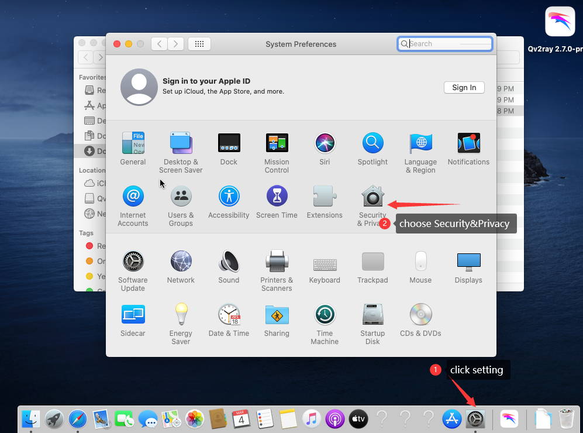

mac使用教程¶
一、客户端下载地址：https://wwa.lanzous.com/iter0npp31c
二、初始化设置（mac设置略微麻烦，还请耐心看完哦）
1、软件安装完毕后，请务必复制软件到你的应用程序文件目录下，否则连接会有问题
2、软件安装完毕后打开，请点击右上角的”首选项”按钮
2.1 软件如果无法打开，请参照如下截图修改系统权限，允许软件打开

3、点击内核设置，点击”V2Ray核心可执行文件路径”中的选择按钮，路径请填写 /Applications/qv2ray.app/Contents/Resources/vcore/v2ray（请务必一模一样复制到软件设置里）
4、点击”V2Ray资源目录”的选择按钮，路径请填写/Applications/qv2ray.app/Contents/Resources/vcore/（请务必一模一样复制到软件设置里）
注意：设置完毕后，点下检查V2Ray核心配置，点击会提示无法运行，请在系统偏好设置里允许运行，详见如下截图
三、设置步骤如下：
设置前，请先检查下系统时间是不是和北京标准时间一致
设置方式一（推荐）
1、点击左上角的分组按钮，进入订阅设置
2、按如下图示依次设置，并输入订阅地址，输入完订阅地址后点更新订阅按钮
3、订阅成功后返回，展开分组，双击选择展开后的节点即可
设置方式二（手动设置）
重要提示！！！如果订阅失败，请参照如下方法手动设置，如果订阅成功，请忽略下面的设置步骤
1、点击新建按钮
2、类型改成Trojan，填写发你的账号信息，按如下设置
3、设置完毕后返回，展开分组，双击选择展开后的节点即可